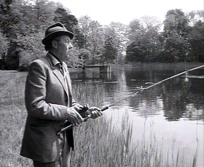
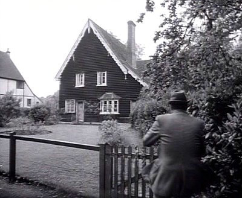
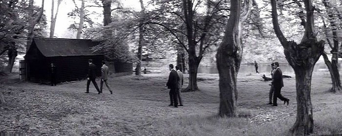
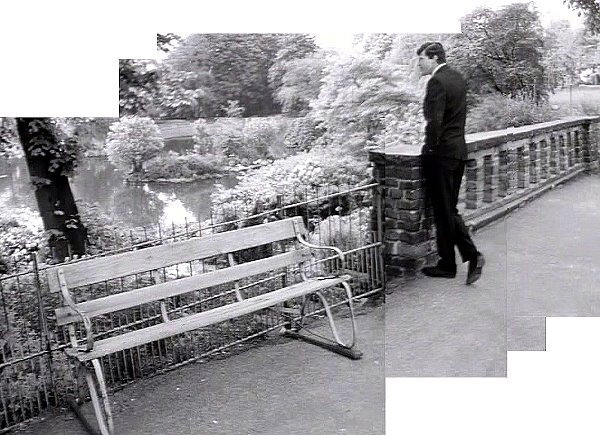

|
|
HELP FIND THE FOLLOWING LOCATIONS
PAGE 77
GIDEON’S WAY: Morna (Cyril Frankel, October 1964)
D5: Knebworth House, Old Knebworth, nr. Stevenage - A fisherman
finds shoe whilst fishing he finds a
body (lake by Wintergreen Woods)…
(Identified by Sietse Postma, January 2024)

Unknown 1 - …. and rushes across a bridge…
D5: Knebworth House, Old Knebworth, nr. Stevenage - …to the home of the village constable (Gardener's Cottage) to raise the alarm.
(Identified by Sietse Postma, January 2024)


Waterlow Park, Highgate Hill, London N6 – Gideon
Michael Usher (Norman Bowler) arranges to
meet Morna
(Angela Douglas) in the park by their ‘special’ bench.
(Identified by Andrew Chilcott, May 2021)

St. Chrisopher's Place, London, W1 - David
makes a call to Morna’s
secret flat at 43 Shepherds Market.
(Identified by Geoff Dodd, February 2024)

Think you know a spot? Need a bigger image? Email me.
< Previous | Index | Avengerland | Next >
Copyright © 2021 Anthony R. McKay